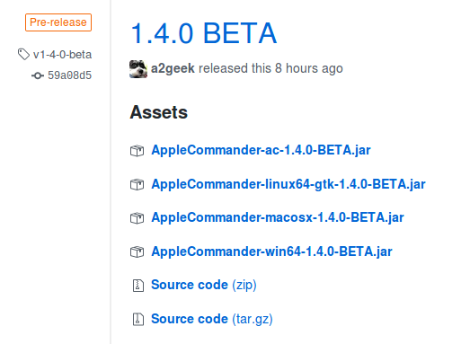
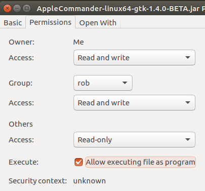

Installing
This section covers installation of AppleCommander. As of 1.4.0, this should be a bit simpler as SWT is now packaged for each platform.
Install Java
If you do not already have Java 8 (or later) installed, you will be required to install one.
Fortunately, Oracle maintains a site dedicated to Java at Java.com.
The directions to check which version of Java you have installed is here.
Download AppleCommander
Visit the AppleCommander release page and download the JAR file for your system. It will look something like this:

Graphical Interface
The GUI component comes pre-packaged with all needed dependencies. You do not need to find and install the SWT toolkit any more!
- For Windows use the file with
AppleCommander-win64-VERSION.jar, - For Macintosh use
AppleCommander-macosx-VERSION.jar, and - For Linux use
AppleCommander-linux64-gtk-VERSION.jar.
Once the JAR is downloaded, just double-click on the file!
For Mac OS X, AppleCommander's windowing library (SWT) requires the -XstartOnFirstThread flag. Starting AppleCommander will need to be from a script something like:
#!/bin/sh
java -XstartOnFirstThread -jar ~/bin/AppleCommander-macosx-VERSION.jar
For Linux, you may need to set the file to be executable by allowing the JAR file to be executed as a program.

Command-line
The distribution file AppleCommander-ac.jar provides a command-line interface to AppleCommander. It is ready to use immediately, but it may be convenient to rename it (e.g. ac.jar) or invoke it from a script, e.g.
GNU bash script for Linux or Mac OS X (ac.sh):
#!/bin/sh
java -jar ~/bin/ac.jar "${@}"
MS DOS batch file (ac.bat):
@echo off
java -jar AppleCommander-1.4.0-ac.jar %*
There is also a Mac OS X Apple II homebrew repository which allows an install of:
$ brew install applecommander
After it installs, applecommander will be a command. Visit the GitHub page for information on how to install the tap.
Unix-like environments have the ability to alias a command as well. To create an ac command alias, use:
alias ac='java -jar build/libs/AppleCommander-ac-1.4.0.jar'